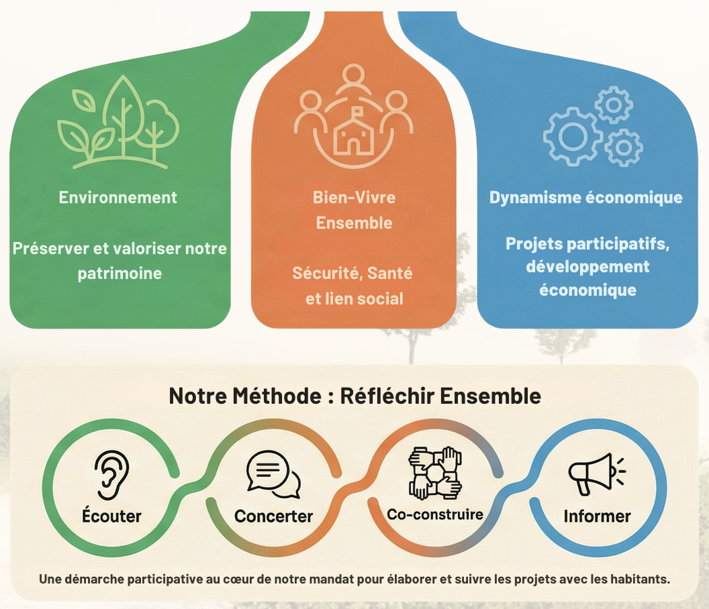

Nos projets
Les projets portés par la liste Chantraine À-Venir sont issus de constats de terrain, d'échanges avec les habitantes et habitants et d'une volonté d'agir de manière concrète, progressive et responsable.
Vidéos thématiques
Naviguer d’un thème à l’autre

Environnement

Préserver l'environnement de proximité, améliorer les espaces publics, favoriser les déplacements doux et veiller à un cadre de vie agréable pour toutes les habitantes et tous les habitants.
Bien vivre ensemble

Le bien vivre ensemble repose sur la sécurité, l'accès aux soins, la solidarité et la vitalité locale, en renforçant le lien social et les actions citoyennes.
Dynamisme économique

Soutenir les commerces et professionnels locaux, encourager l'initiative économique et accompagner un développement maîtrisé et attractif du territoire.